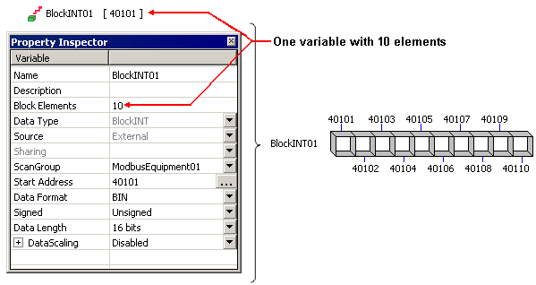

|
|
|
|
|
|
|
|
Block variables are a special type of variable that enables faster communication with blocks of contiguous device addresses. Block variables are mainly used in recipes, which write values to multiple device addresses in a single step. Although a block variable has access to multiple device addresses, it appears in the Variable List as a single variable and counts as 1 towards the variable count.

Given the variable properties defined above (Block Elements = 10, Start Address = 40101, DataLength = 16 bits) the Block INT variable starts at device address 40101 and ends at device address 40110.

For Block REAL variables, the size of each unit is 32 bits.
For Block INT and Block UINT variables, the size of each unit is 16 bits.
For Block DINT variables, the size of each unit is 32 bits.
For Block Integer variables, the size of each unit is defined by the DataLength property, either 16 or 32 bits.
When working with a block variable, the variable is associated with a block of devices addresses, defined by the Start Address and Number of units properties. Use the block address for when you need to update multiple contiguous device addresses.
In the following example, the target machine is set up to change the values in addresses 40101 to 40104.

The simplest way to change all the device address values is using a block variable. The Block variable should be configured with a Start Address of 40101 and Block Elements = 4. Using either scripts or recipes, you can set values in each unit of the block then send the block to the equipment.

Block variables are available for use in Recipes, Scripts, Block Trend Graphs, and XY Graphs.
Use block variables with equipment that support Read Multiple and Write Multiple function codes to achieve better read/write performance. If your equipment does not support Read Multiple and Write Multiple function codes, then you may want to use arrays instead.